| Stil | familjen | hamn | hamnBiff | valv | dagbok | planering | mabra | kompis | projekt | arbetsliv | rutiner | ekonomi | utveckling | kunskap |
|---|---|---|---|---|---|---|---|---|---|---|---|---|---|---|
| Gold Wire | 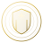 | 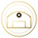 | 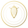 | 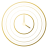 | 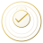 | 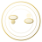 | ||||||||
| Gold Emboss 3D | 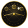 | 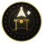 | 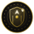 | 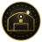 | 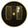 | 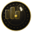 | 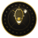 | 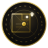 | 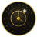 | 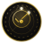 | 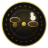 | 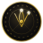 | 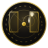 | |
| Aurora Spectral | 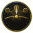 | 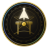 | 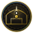 | 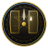 | 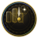 | 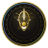 | 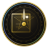 | 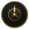 | 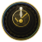 | 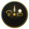 | 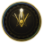 | 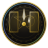 | ||
| Sacred Ember | 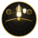 | 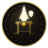 | 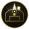 | 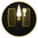 | 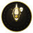 | 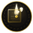 | 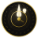 | 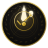 | 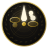 | 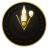 | 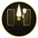 | |||
| Obsidian Glass | 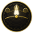 | 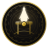 | 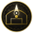 | 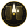 | 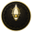 | 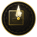 | 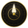 | 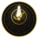 |